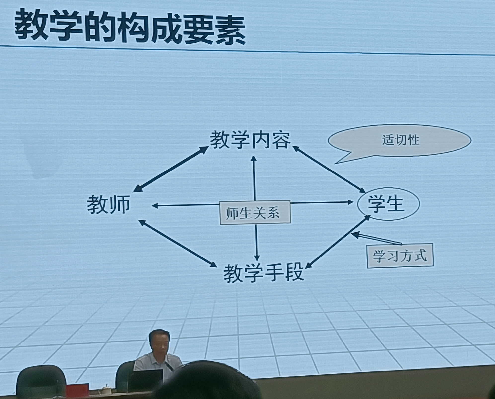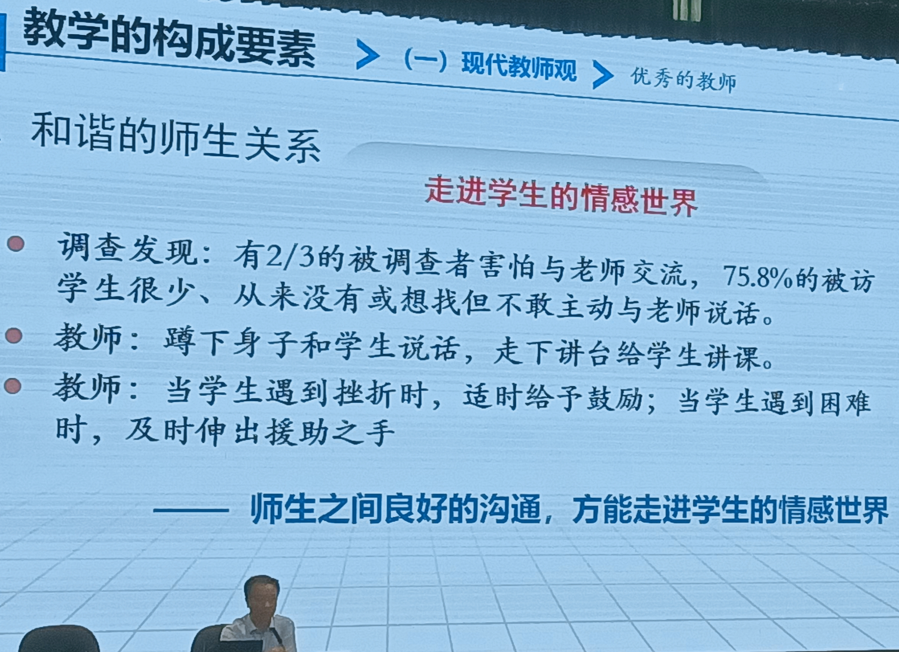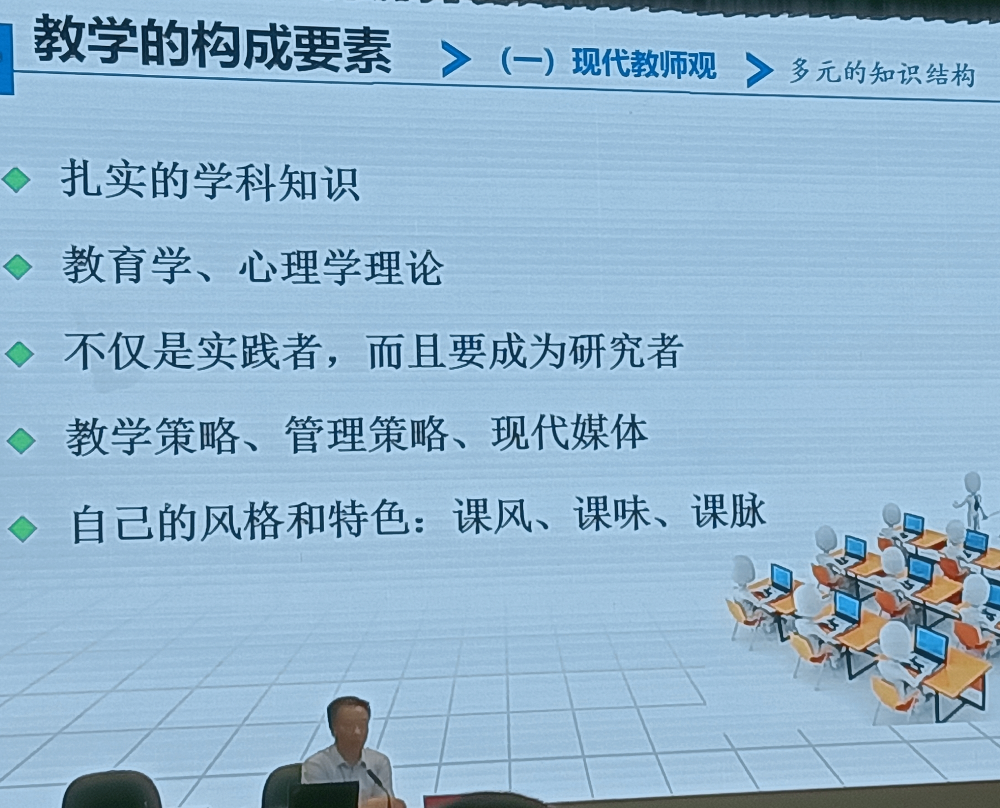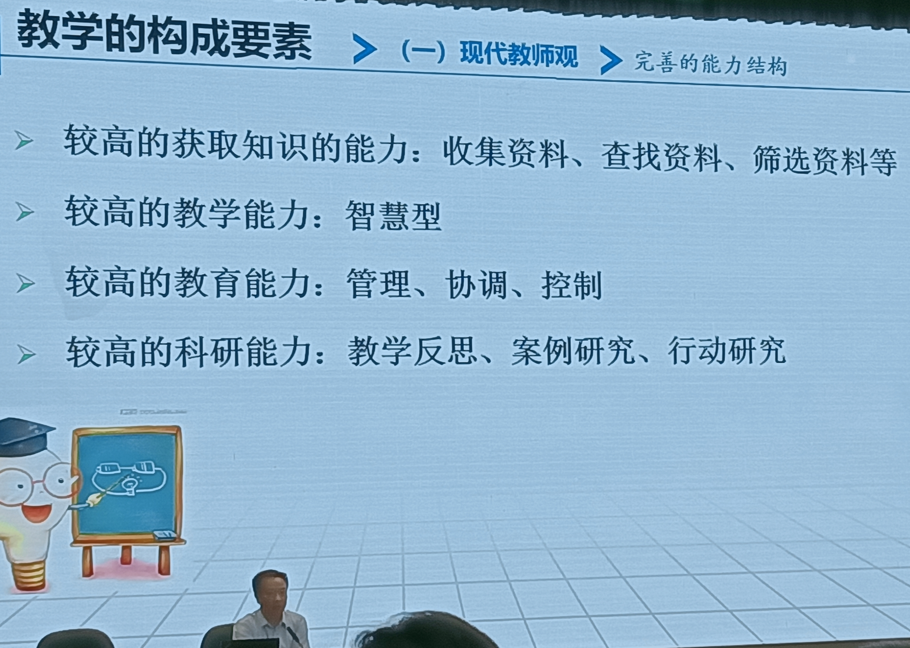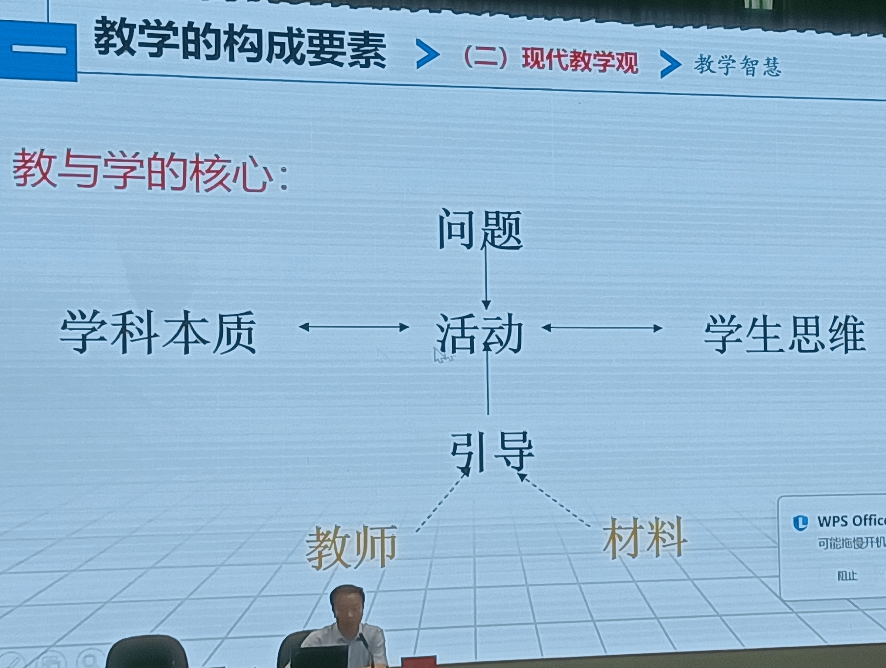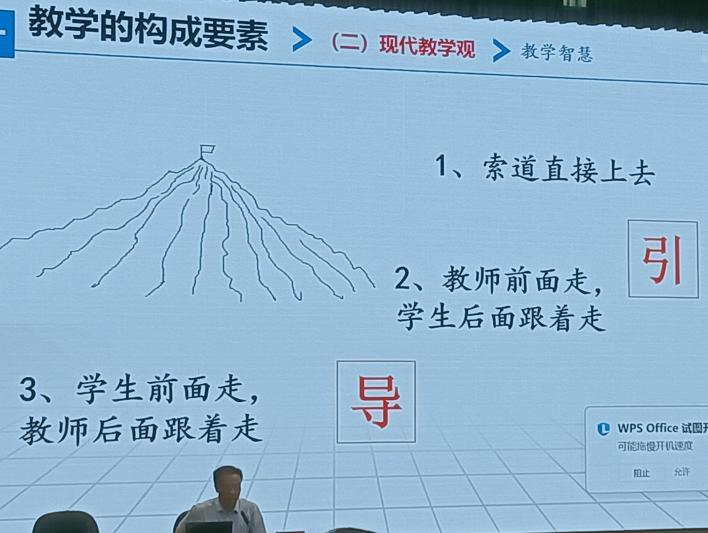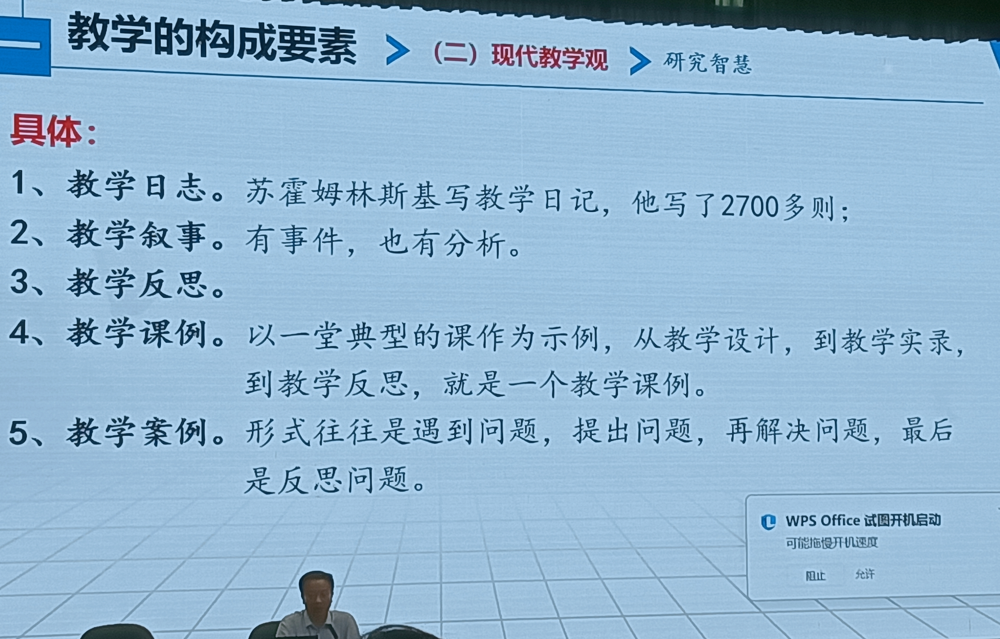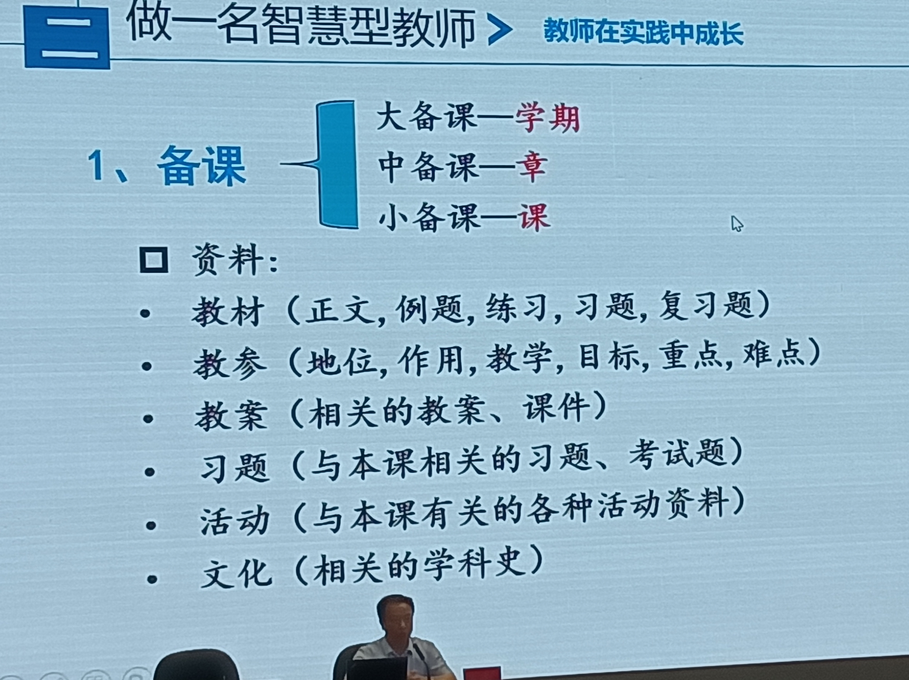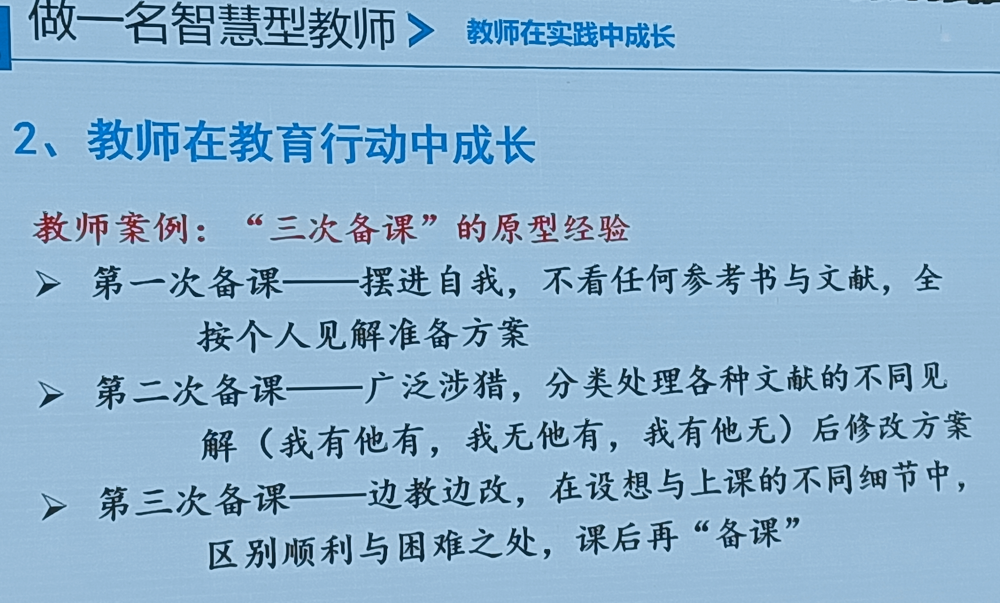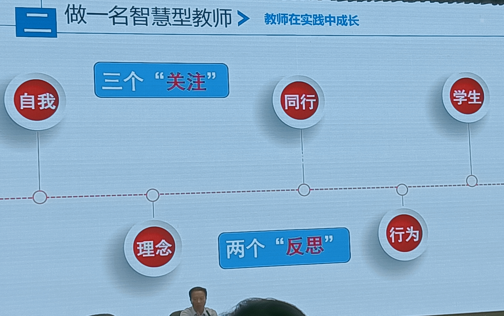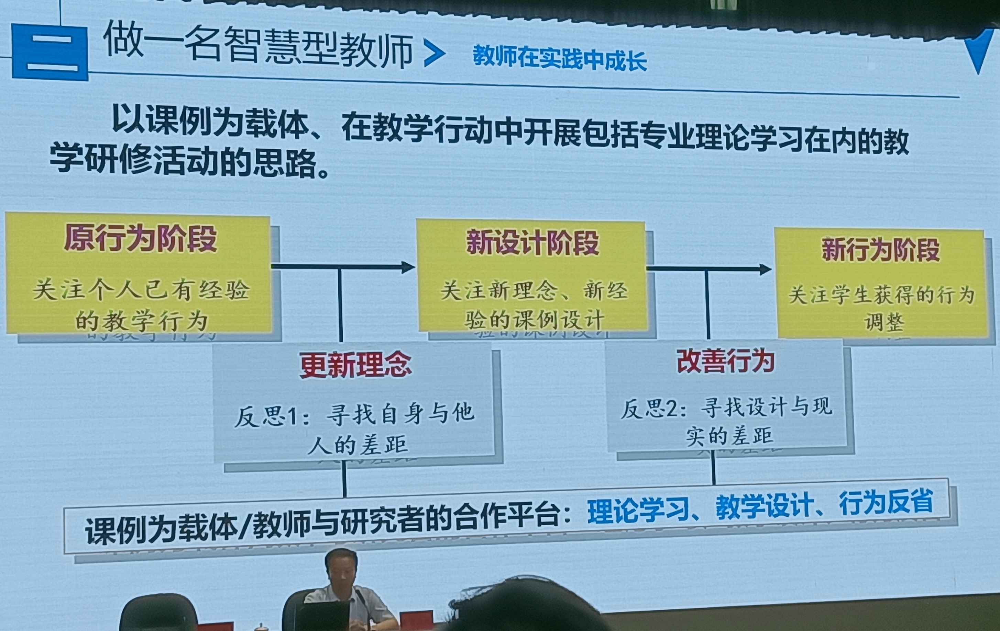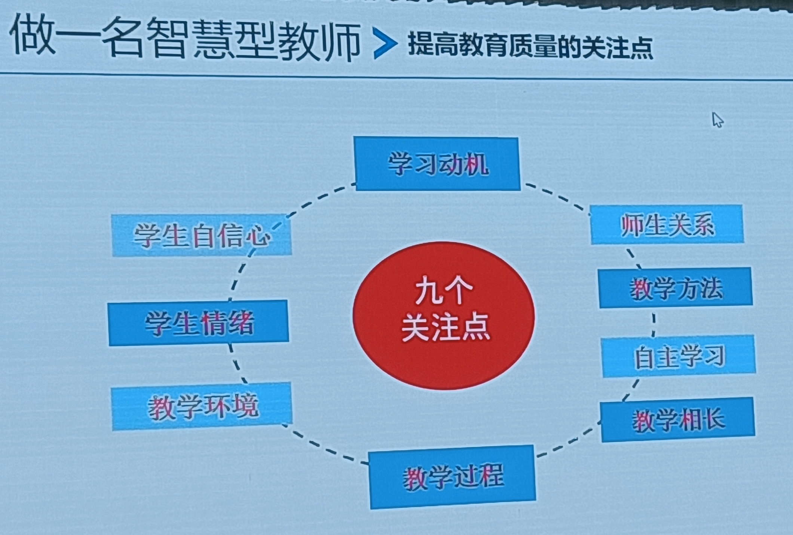
皇甫老师的讲座非常精彩，我收获超多，不虚此行。他曾在淮中执教高中数学二十几年，正高级职称，特级教师，曾任淮中校长。他提到淮中的新教师会在学期前去买四五本市面上的练习册刷题，学生来问的时候看一眼就能说出这道题的答案是什么，有多少种解法。他强调扎实备课、多次备课的重要性。他说师生关系很重要，要与学生平等对话，要认识到学生的潜力是无穷的。他还说教师要不断提高自己，不仅是阅读写作，还有讲话的方式，注意语音语调，跟读播音练习。整场讲座干货满满，执教同一学科的我感触颇深，最多的就是感到被指引、引领和鼓舞，使自己有了努力的方向和目标，想成为的样子从无到有逐渐明晰。